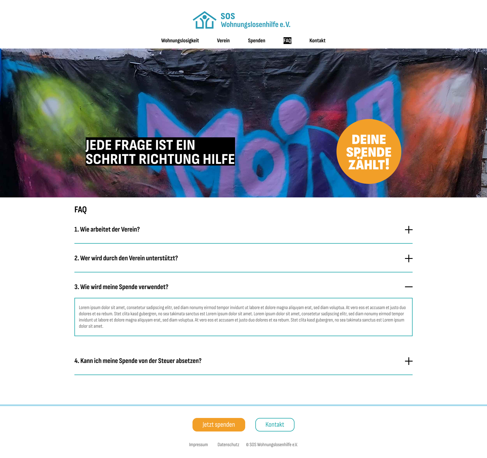

Wie arbeitet der Verein?
Die Vereinsmitglieder arbeiten ehrenamtlich, alle Spenden kommen wohnungslosen Menschen zugute.


Die Vereinsmitglieder arbeiten ehrenamtlich, alle Spenden kommen wohnungslosen Menschen zugute.
Der Verein arbeitet regional und unterstützt insbesondere wohnungslose Menschen vor Ort.
Ein großer Teil der Spenden wird für Lebensmittel und Kosten für die Wiederbeschaffung von Dokumenten sowie für Fahrkarten verwendet. Außerdem werden Projekte zur gesellschaftlichen Teilhabe wohnungsloser Menschen finanziert.
Ja, der Verein ist vom Finanzamt als gemeinnützig anerkannt, Spendenquittungen werden Ihnen gern ausgestellt. Bitte teilen Sie uns dazu das Datum Ihrer Spende und Ihre Kontaktdaten mit.